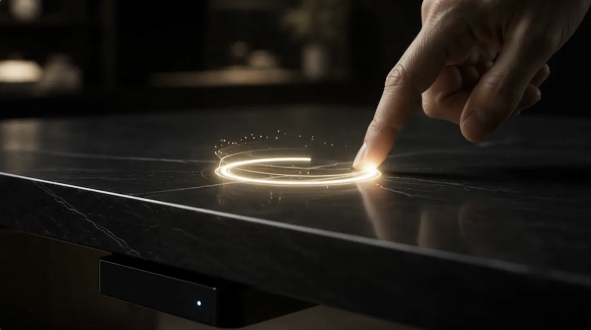
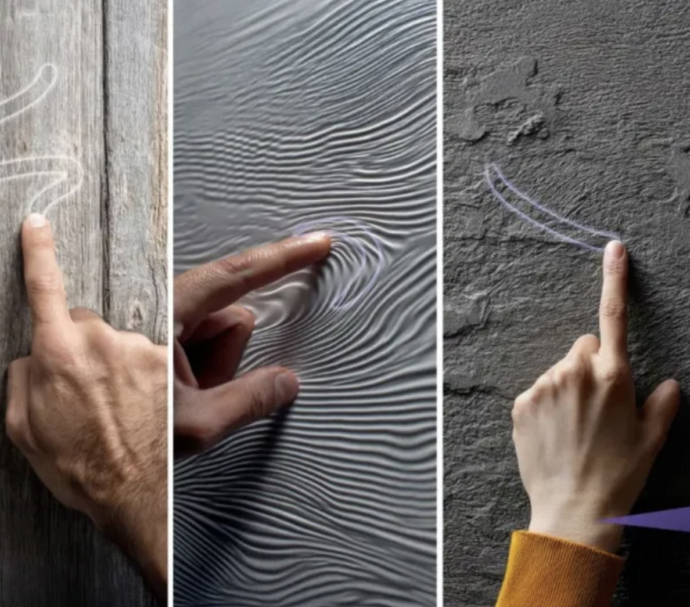
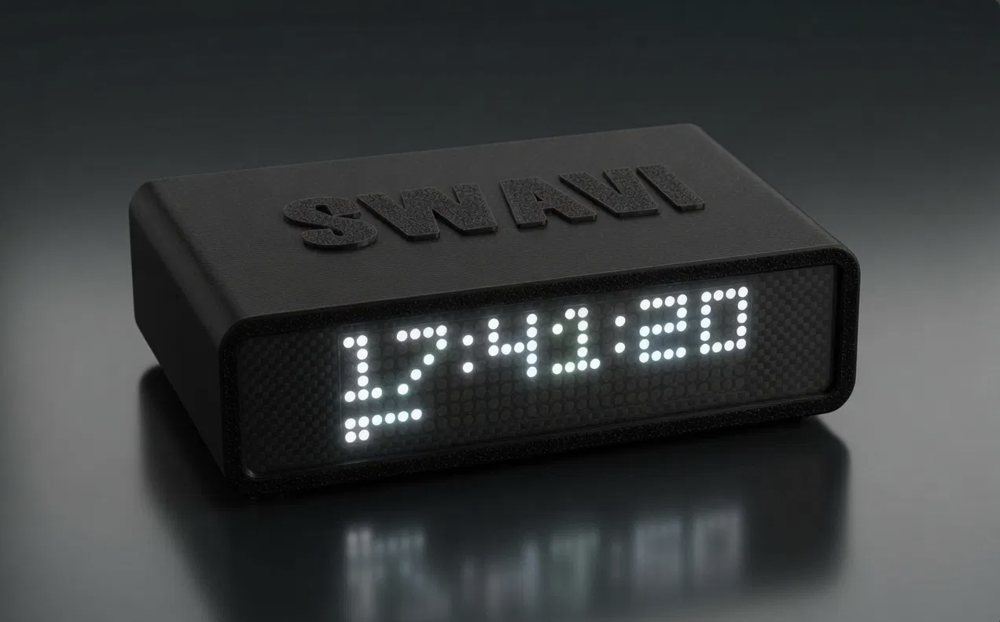
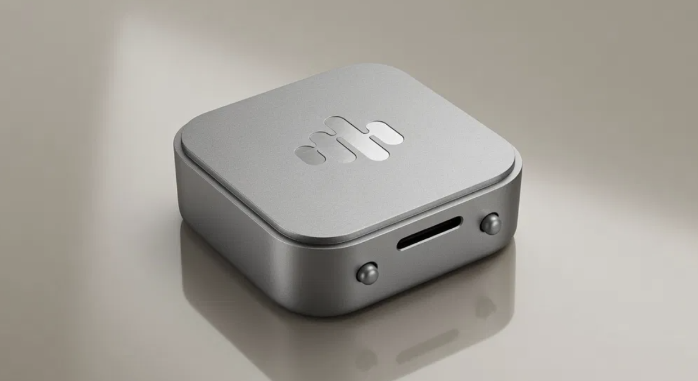
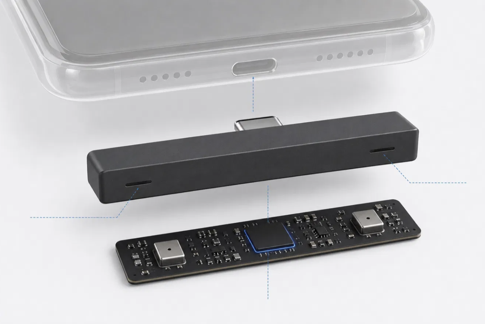
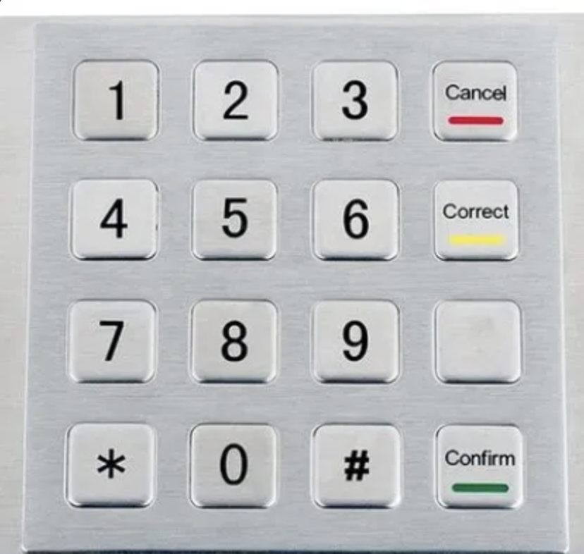
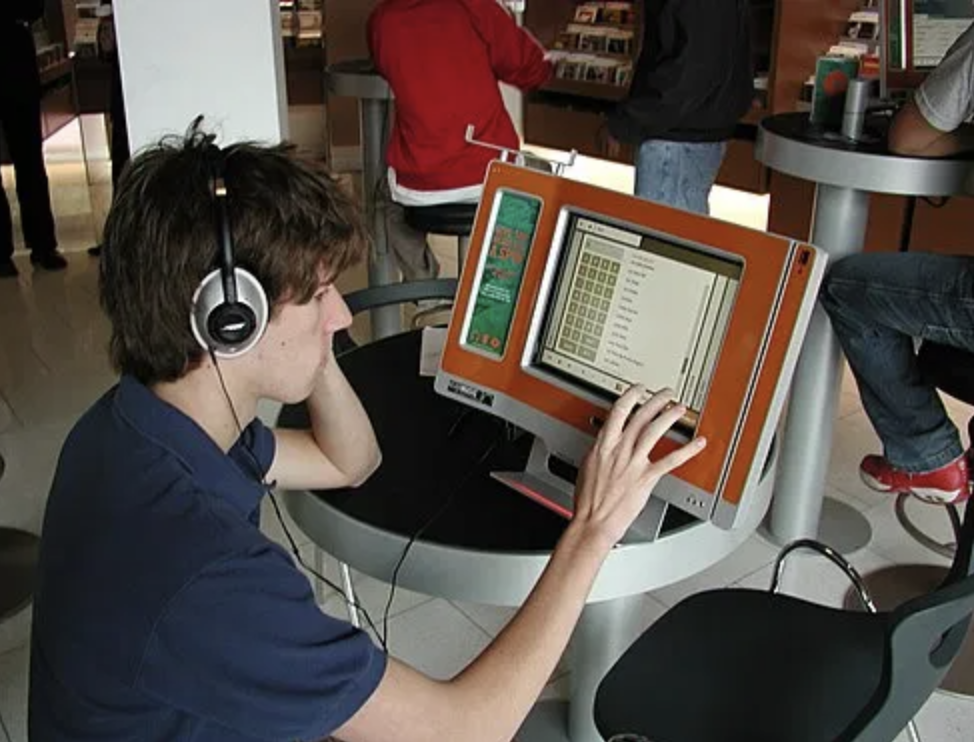

¿Qué es?
SWAVI es un sensor que se coloca en una superficie sólida (mesa, pared...) y reconoce lo que el usuario dibuja con la yema del dedo (números, letras o gestos). Estos trazos se convierten en comandos sin necesidad de pantallas ni botones.
Detecta las señales acústicas generadas por la fricción de los gestos de las yemas de los dedos y las convierte en una entrada digital segura.
Pasos de su funcionamiento
- El usuario traza un gesto con el dedo sobre la superficie.
- El sensor capta el sonido de fricción que produce.
- La IA reconoce la forma y la convierte en una orden, por ejemplo encender una luz.
¿Cómo mejora la interacción?
Por qué lo he elegido
He elegido el SWAVI porque cambia el canal por el que damos órdenes a un sistema: la interfaz deja de ser un objeto (un botón, un teclado, una pantalla) y pasa a ser cualquier superficie. Además es reciente, y no se limita a recibir órdenes: reconoce al usuario por cómo traza el gesto, que es justo lo que estudiamos en Interacción Persona-Ordenador.
Qué cambia
Hasta ahora, para dar una orden a un sistema necesitábamos un objeto visible. Con SWAVI, la propia superficie es el mando, y solo existe cuando se usa.
Cómo lo consigue
Convierte un gesto natural, dibujar con el dedo, en un comando. Los teclados y las pantallas se desgastan y quedan expuestos; en cambio, un gesto sobre una mesa o un panel no deja huella visible, y según el CES resiste mejor el deterioro.
Cómo entiende al usuario
El CES lo describe como una interfaz de biometría de comportamiento: no solo importa qué dibujas, sino cómo lo dibujas. Así, el mismo gesto sirve para dar una orden y para comprobar quién la da.
A quién beneficia
Según las demostraciones que la empresa muestra en su web:
- Hogar inteligente: controlar luces desde un panel sin interruptores a la vista.
- Empresas y seguridad: identificar a la persona por la forma en que traza el gesto.
- Espacios públicos: quioscos con una interfaz accesible.
- Automoción: controles en la consola central de un coche.
Beneficios para el usuario
- Discreción: no hay botones ni pantalla a la vista.
- Seguridad: el mismo gesto sirve para dar la orden y para comprobar quién eres.
- Durabilidad: no hay piezas expuestas que se desgasten.
- Naturalidad: dibujar con el dedo es un gesto que ya sabemos hacer.
Evolución
Dar órdenes a una máquina se ha resuelto de formas distintas a lo largo del tiempo. En cada paso se quita un objeto del camino entre la persona y el sistema.
- Botones y teclados numéricos físicos. Son directos, pero se desgastan, ocupan espacio y dejan la entrada a la vista, algo que la empresa señala como un problema de seguridad.
- Pantallas táctiles. Eliminan los botones fijos y permiten interfaces que cambian, pero siguen necesitando una pantalla expuesta que se toca, se ensucia y se gasta.
- Knocki (2016). Un disco que se pega a una pared o una mesa y la convierte en mando detectando golpes. Es el antecedente más claro de la superficie como interfaz.
- SWAVI (2025-2026). No solo detecta un golpe, sino que reconoce formas dibujadas analizando el sonido de la fricción, con IA en el propio dispositivo, y además puede servir para identificar a la persona.
Otro antecedente cercano es el Fibaro SWIPE, un panel inalámbrico y oculto de control por gestos para la domótica.
Qué mejora SWAVI
- Frente a los botones: no hay piezas expuestas que se desgasten ni una entrada a la vista.
- Frente a las pantallas táctiles: no necesita pantalla, y el gesto sirve también para identificar a la persona.
- Frente a Knocki: reconoce formas, letras y números, y no solo golpes.
Imágenes
Cómo funciona sobre una superficie


La gama de dispositivos



Lo que sustituye


Más información
Fuentes oficiales del dispositivo
Documentos fechas
- Reglas del concurso: premiados públicos el 5 de noviembre de 2025
- Noticia del 7 de noviembre de 2025 sobre el premio a COMMONLINK
- Comunicado de la CTA: CES 2026, del 6 al 9 de enero